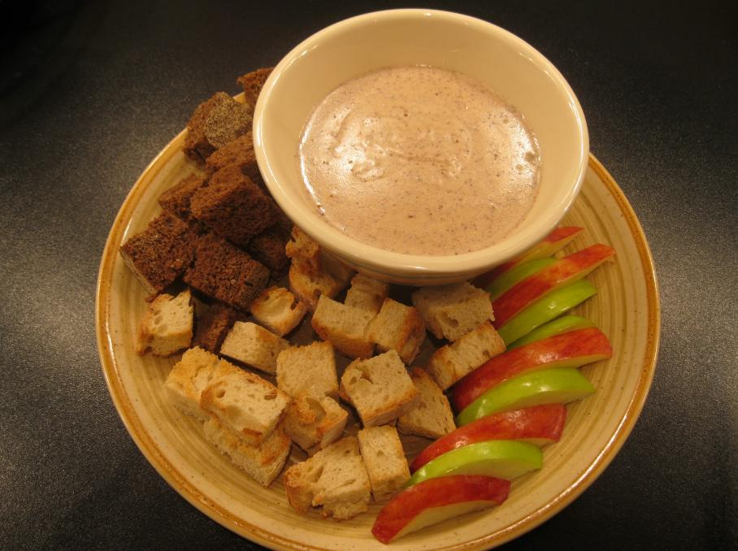

Elsweyr Fondue

A delicious and herty dish!
Nothing quite beats gathering with friends and family around the fondue pot.
Sharing the simple joy of warm cheese and fresh bread!
Ingredients:
- Fondue pot and skewers
- 1 bottle of ale, left overnight to go flat
- 100g gruyere cheese, grated
- 100g emmental cheese, grated
- 100g soft blue cheese, diced
- Brown sugar, to taste
- Fresh bread, cut into cubes
Steps:
- Set up your fondue pot
- Add the ale and sugar, and stir until sugar has melted
- Add the grated cheese bit by bit, stirring to ensure it melts smoothly
- Once the emmental and gruyere are melted, add the blue cheese pieces and stir
until the mixture is completely smooth
- Pass a bowl of bread cubes around the table and enjoy!
Home